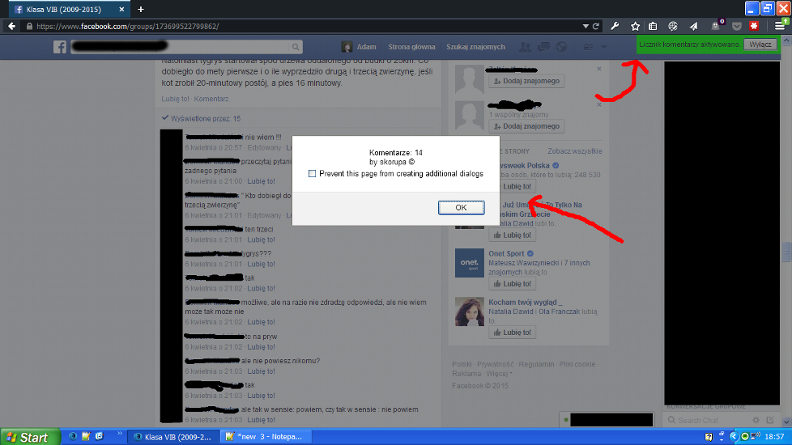
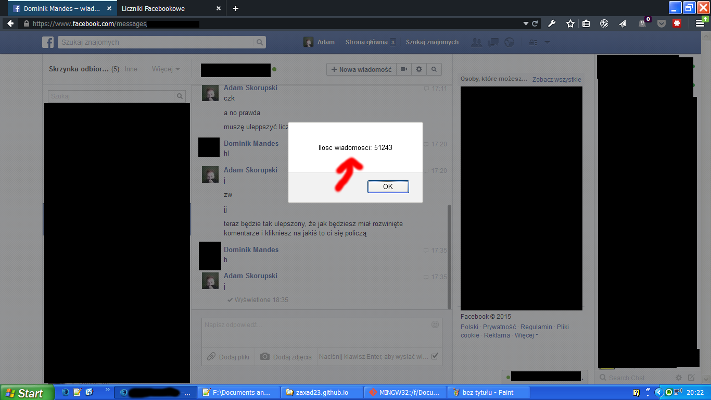

Liczniki Facebookowe (skryptozakładki)
Licznik komentarzy
Licznik komentarzy to licznik, który liczy komentarzy przy danym poście na Facebook'u.

Instalowanie skryptozakładki
- Włącz w swojej przeglądarce pasek zakładek. (gdzieś w Widok)
- Przeciągnij link obok na pasek zakładek. Licznik komentarzy
- Koniec.
Używanie
- Wejdź na jakąś grupę na FB.
- Rozwiń komentarze do końca w poście, przy którym chcesz policzyć komentarze.
- Uruchom zakładkę.
- Kliknij na komentarze.
- Koniec.
Licznik wiadomości
Licznik wiadomości to licznik, który liczy wiadomości na FB.

Instalowanie skryptozakładki
- Włącz w swojej przeglądarce pasek zakładek. (gdzieś w Widok)
- Przeciągnij link obok na pasek zakładek. Licznik wiadomosci
- Koniec.
Używanie
- Wejdź na Facebooka.
- Wybierz osobę z czatu po prawo.
- Przy konwersacji kliknij takie koło mechaniczne, a potem "Zobacz pełną konwersację"
- Uruchom zakładkę.
- Koniec.
Miłego używania!
© by Adam Skorupski